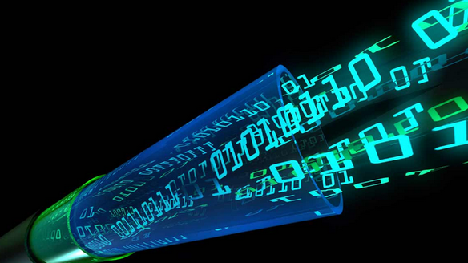

My major:Communication Engineering(If you want to know more, please click the text above.)At the beginning, I just stepped into the university campus, in fact, I didn't know very much about the communication engineering major, or even what it was about. I once considered whether to change my major. But later, after I had some connections with the communication engineering major, I gradually changed my view. Communication engineering is an undergraduate course under the first level discipline of information and communication engineering. It mainly trains students to study the basic theory, composition principle and design method of communication system and communication network, and enables students to have the basic ability to engage in the design, development, debugging and engineering application of modern communication system and network. Although I have just entered my freshman year, I don't have many professional courses, but only one semester has taught me a lot, from knowing nothing about the code to understanding the basis of C language and self-taught a little basic knowledge of HTML, which makes me not at a loss in the first web page production.
|
 |